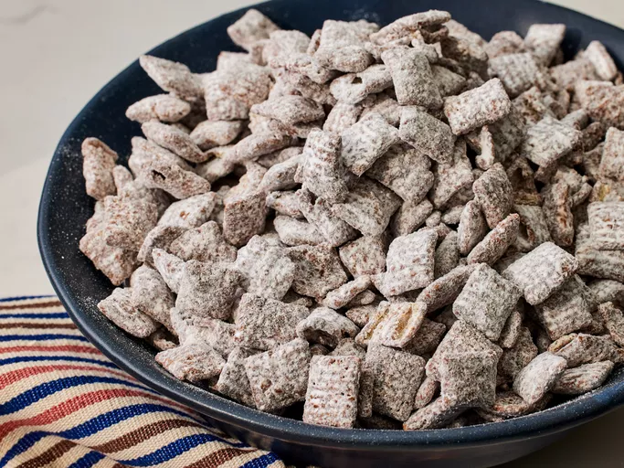

Puppy Chow

Description
“Puppy chow” (a.k.a. muddy buddies) is the name for a homemade candy or snack that’s made with cereal, chocolate, peanut butter, and powdered sugar. General Mills sells their own version of the popular treat, but it’s easy to make at home with just a few ingredients.
Ingredients
- Chocolate chips: This recipe starts with a cup of semisweet chocolate chips.
- Peanut butter: Peanut butter helps hold the ingredients together. You can use almond butter, if you prefer, but the results might be slightly softer.
- Rice cereal squares: You’ll need a whopping nine cups of crispy rice cereal squares.
- Confectioners’ sugar: Make sure to use confectioners’ sugar (a.k.a. powdered sugar) for this recipe.
How To Make Puppy Chow
- Melt the chocolate and peanut butter together.
- Remove from the heat and stir in the cereal.
- Pour the sugar into a large resealable bag.
- Add cereal and shake until well-coated.
Home